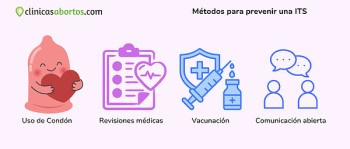
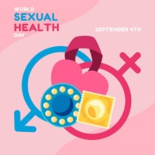
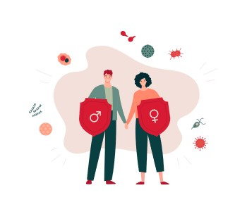

Principales tipos y transmision...
Las enfermedades de transmisión sexual se contagian principalmente por contacto sexual sin protección, también por sangre, embarazo o parto.
Las más frecuentes en México son: VIH/sida, sífilis, gonorrea, clamidia, hepatitis B y C, herpes genital, VPH y tricomoniasis.
Muchas no presentan síntomas al inicio, por lo que se propagan sin que la persona lo sepa.

Problematica en Mexico...
Dejó de ser solo un tema de salud individual para convertirse en un problema de salud pública y social. Existen barreras: falta de información, vergüenza para consultar, acceso limitado a pruebas gratuitas y tratamientos, además de que muchas personas no usan protección. Los casos van en aumento en varios grupos etarios, y el sistema sanitario debe atender tanto el tratamiento como la educación.

Medidas de prevencion y atencion. Expertos indican que la solución requiere educación, acceso fácil a salud y respeto:Uso correcto de preservativos este reduce drásticamente el riesgo. Pruebas periódicas: detectar a tiempo evita daños graves y contagios.Tratamiento oportuno: muchas son curables; otras se controlan con medicación.Educación sin tabúes: desde escuelas y centros de salud.Vacunación: contra VPH y hepatitis B, disponibles en el sector público.